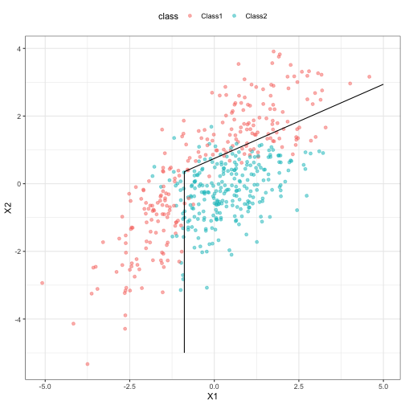

discrim contains simple bindings to enable the parsnip package to fit various discriminant analysis models, such as
- Linear discriminant analysis (LDA, simple and L2 regularized)
- Regularized discriminant analysis (RDA, via Friedman (1989))
- Flexible discriminant analysis (FDA) using MARS features
- Naive Bayes models
Example
Here is a simple model using a simulated two-class data set contained in the package:
library(discrim)
#> Loading required package: parsnip
parabolic_grid <-
expand.grid(X1 = seq(-5, 5, length = 100),
X2 = seq(-5, 5, length = 100))
fda_mod <-
discrim_flexible(num_terms = 3) %>%
# increase `num_terms` to find smoother boundaries
set_engine("earth") %>%
fit(class ~ ., data = parabolic)
parabolic_grid$fda <-
predict(fda_mod, parabolic_grid, type = "prob")$.pred_Class1
library(ggplot2)
ggplot(parabolic, aes(x = X1, y = X2)) +
geom_point(aes(col = class), alpha = .5) +
geom_contour(data = parabolic_grid, aes(z = fda), col = "black", breaks = .5) +
theme_bw() +
theme(legend.position = "top") +
coord_equal()